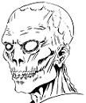

Joué par :
Terrycia Joué par :
[ Information masquée ] Age : Indéterminé
Lieu de naisance : Inconnu
Signe de naissance : Inconnu
Sexe : Homme
Race : Mort-vivant
Faction : Horde
Formation : Voleur
Niveau : 25
Guilde : Artisanat 1 : Enchanteur
Artisanat 2 : Dépeceur
Informations hrp : Sephorius est un amateur de mythes et de légendes, surtout celles qui peuvent lui permettre de mener à bien son projet final, l'avènement de l'Ere de la Chaire Morte. Il exècre la vie et n'a de scrupule pour rien, ni personne...
Il participe actuellement à la chronique de l'Epée d'Ishara.
Troisième Ère [6]
Lune de la Force
Décade du Panda
Décade du Gorille
Décade de l'Ours
Lune d'Agilité
Décade du Tigre
Décade du Singe
Décade du Faucon
Lune de l'Esprit [6]
Décade de la Chouette [4]
Dans les geôles de l'apothicarium... [1]
[HRP les paroles de ces textes sont en bas parlé ]
Voila déjà quelques temps qu'il furetait d'un côté, de l'autre, se glissant dans les failles du mur ou entre les barreaux des geôles, inconscient d'où il se trouvait, cherchant une quelconque nourriture à se mettre sous la dent, volant aux prisonniers fatigués et crasseux les miettes de ce qu'on voulait bien leur donner...
Quelques pas, encore, l'odorat aux aguets, une effluve... Du pain... Rassis certes, mais au parfum alléchant parmi les odeurs de pourriture ambiante... Encore quelques enjambées... L'objet de sa convoitise était presque acquis lorsqu'une main squeletique se referma sur son dos, le soulevant du sol avant qu'une seconde ne lui brise la nuque...
Sephorius le guettait depuis longtemps déjà... Depuis son entrée dans les geôles... Cette pauvre créature... Ce rat... Inconscient de son environnement... Inconscient de sa propre mortalité... Un rictus de satisfaction se dessina sur son visage lorsqu'il lança le cadavre de l'animal au pied de cette cage, sous les yeux médusés de la femme en pleurs qui y était enfermée...
- Une simple pression... La fin d'une histoire...
Le mort-vivant releva les yeux vers la prisonnière, la détaillant un long instant, drapée dans les guenilles déchirées qu'on avait bien voulu lui laisser...
- Fragile est la chaire vivante... Tu t'en doutes bien ma belle... C'est le destin qui t'attend... Rejoindre cette vermine dans ce qui vous effraie tant...
L'humaine le regardait, tremblante, observant Sephorius du fond de sa cage, incapable de comprendre ce que lui disait son visiteur.
- Il sera bientôt temps... Temps que votre règne s'achève... Cette ère ne tolèrera pas la faiblesse... Les tiens n'y ont plus leur place... Tout comme les elfes, les taurens ou les orcs... Ce monde n'est plus le votre... La vie... Votre faiblesse... Votre mort... Notre avenir...
Sephorius adressa un franc sourire à la prisonnière, un sourire qui se serait voulu amical si son visage n'avait pas autant souffert de son temps passé en terre...
- Je t'offre un cadeau... Si belle... Si jeune... Ta place n'est pas dans cette cage...
Il se releva s'avançant doucement de sa démarche étonnamment agile pour un "zombie", puis d'un geste rapide, fit cliqueter la serrure de la cage, ouvrant grand la porte alors que la prisonnière se reculait, la peur dans le regard, ne sachant à quoi s'attendre. Puis Sephorius se recula, lui désignant la porte ouverte et l'étroit tunnel qui sortait de la pièce.
- Va ma belle... Fuis... Vol vers la liberté... Vers la fin de tes tourments...
La jeune femme hésita longuement, fixant le simulacre de sourire que lui adressait le mort-vivant, puis finit par se lever, d'abord craintive, puis sortit de la cage en trombe, le tunnel qui la mènerait à la liberté comme seul objectif...
Un geste... Vif... Calculé... Elle s'arrêta, les yeux équarquillés, portant une main à son cou, une douce chaleur enrobant ses doigts alors que son sang s'écoulait lentement le long de ses phalanges... Le regard chargé d'incompréhension, elle baissa les yeux sur sa main, rouge du sang qui s'écoulait de sa gorge...
Sephorius l'attrapa par la gorge, la forcant à relever la tête dans ses derniers instants, plongeant son regard dans le sien, un sourire mauvais se dessinant sur ses lèvres nécrosées...
- Te voila libre ma belle...
Il relacha la jeune femme alors que la vie quittait lentement son corps, celui-ci chutant au sol. Il porta un de ses doigts à sa bouche, imprégnant son palais du goût métallique si particulier de l'essence de la vie qui s'éteignait à ses pieds, avant de disparaitre dans l'ombre sans un regard pour sa victime...
Dans les geôles de l'apothicarium... [2]
Des jurons entrecoupés de quintes de toux s'élevaient ce soir la des geôles. La voix rocailleuse du fier Montagnard avait nettement perdu de sa superbe après les quelques fioles que lui avait fait ingurgiter l'apothicaire qui venait de quitter la pièce.
Tapis dans l'ombre, Sephorius observait la scène... Ce nain dont il ne comprenait pas les insultes, et cette humaine, penchée sur lui... Une nouvelle pensionnaire pensa-t-il. Une de plus...
Le sang de la veille était encore visible sur le sol, devant l'entrée, témoin tenace de ce qui s'était produit. Le corps était resté longtemps sur place avant que quelqu'un s'aperçoivent de sa présence. Le mort-vivant demeura un instant pensif, fixant la trace sur la pierre.
Une autre quinte de toux, plus longue, plus rugueuse. La jeune femme ne savait que faire pour aider son compagnon d'infortune. Celui-ci crachait glaires, sang et bile dans un concert de râles et de gargouillis résonnant dans la pièce humide.
Exaspéré par le tintamarre dont le nain faisait profiter ses compagnons, Sephorius sortit doucement de l'ombre, dardant sur celui-ci un regard méprisant, posant doucement un doigt sur sa bouche pour l'enjoindre à se taire.
- Plus un mot... Plus un bruit...
L'humaine recula à la vue du mort-vivant, alors que son compagnon relevait la tête, proférant une panoplie d'insultes à l'intention de Sephorius.
- Fierté... Bravoure... Honneur... Autant de synonymes d'imbécilité...
La voix se tut soudainement, alors que le nain portait ses doigts crasseux à son cou, retirant une fine aiguille de celui-ci, le regard emplis d'incompréhension devant la main que tendait le mort dans sa direction. Un sourire se dessina sur le visage de celui-ci lorsque le nain se raidit, tremblant pendant quelques instants, l'écume lui montant à la bouche, sous les yeux horrifiés de la prisonnière.
- Voila... Tu as gagné ton droit à mourir en héros... C'est effarant de voir à quel point tant de mortels glorifient la mort... Des "nobles" paladins aux barbares orcs...
Sephorius détourna le regard, le posant sur l'humaine, statique, respirant à peine. Il émanait quelque chose de différent de cette personne... La même peur certes... Ces mêmes doutes qui tiraillaient tant de prisonniers... Mais... ce n'était pas tout... Il s'approcha doucement de la cage, posant ses doigts sur les barreaux, observant la jeune femme, qui ne bougea pas, soutenant son regard.
- Etrange... Voila une rencontre bien étrange...
Il glissa doucement sa main entre les bareaux, pointant ses doigts vers elle pour lui faire signe de s'approcher. Celle-ci, refusa après avoir tourné son visage au traits fins vers le cadavre qui partageait maintenant sa cellule. Sephorius lui sourit, un sourire satisfait. Il retira sa main, se reculant un peu avant de l'observer à nouveau, s'arrachant quelques lambeaux de peau en se grattant la mâchoire...
- Intéressant... Très intéressant...
Sephorius se retourna doucement, se dirigeant lentement vers la sortie, laissant la jeune femme à ses réflexions...
Dans les geôles de l'apothicarium... [3]
La faible lumière dansante de la bougie projetait d'étranges ombres dans la pièce, laissant imaginer moultes démons tapis dans la pénombre. Une seconde flammèche naquit, non loin de sa consoeur, surplombant un étroit calice métallique d'un noir d'encre dans lequel stagnait un liquide à l'origine douteuse mais à l'odeur aisément reconnaissable.
Sephorius ouvrit doucement la main, la poussière scintillante glissant lentement entre ses doigts à la manière d'une poignée de sable, déclenchant un léger remous lorsque celle-ci entra en contact avec le liquide, qui se mit progressivement à bouillir au fur et à mesure que le mort-vivant récitait l'incantation.
Assis en tailleur devant le récipient, Sephorius ferma les yeux, en silence, alors que le sang commençait doucement à s'évaporer, répendant une odeur atroce dans la pièces.
L'ambiance était désespérante au Solitaire Bleu, comme bien souvent ces derniers jours. Delra semblait plongée dans la contemplation du fond de lait qui subsistaient dans chopine. Des jours qu'elle cherchait, d'un côté, de l'autre, la moindre trace, le moindre écrit, concernant ces griffures qui parcouraient son bras... Rien... Pas même l'ombre d'une piste... Toujours cet incompréhension de la part de ses interlocuteurs, ou pire, ces airs intéressés qui ne faisaient que cacher leur ignorance sur ce qui lui arrivait... Sur ce qui s'était produit loin dans le nord pendant sa période d'amnésie...
- Et zut à la fin...
Elle repoussa sa chopine, la renversant par mégarde sur les parchemins que lui avait confiés la bibliothèque de la tour. La jeune femme se redressa d'un bond sur sa chaise, tentant de sauver ce qu'elle pouvait, faisant plus de ravages qu'autre chose.
- Non ! Mais quelle gourde !
Delra lacha un long soupire qui eut pour effet d'attirer l'attention des quelques clients présents. Ses pommettes se teintèrent rapidement de rouge, s'asseyant lentement pour se faire oublier, jetant de temps à autres des regards timides autours d'elle.
Elle laissa son oreille vagabonder de table en table, écoutant les conversations qui s'échangeaient dans la salle enfumée de la taverne. Son attention s'arrêta sur un petit groupe alors que sa main gauche vint machinalement masser son avant-bras, les griffures rougeoyant vivement au travers de la manche de sa chemise de soie...
Sephorius ouvrit lentement les yeux, un sourire satisfait se dessinant doucement sur son visage. Son regard tomba sur le calice, duquel s'échappait les dernières volutes de vapeur, le laissant vide de son contenu.
- Eôwyn... Loredala... L'Epée d'Ishara... Notre collaboration porte ses fruits ma belle... Brave petite...
Le mort-vivant éteignit simultanément les deux bougies du bout des doigts, plongeant la pièces dans les ténèbres...
Décade de la Baleine [1]
Dans les geôles de l'apothicarium... [5]
[Ce texte est en réaction à la réunion des druides à laquelle Sephorius a participé.]
Sephorius la regardait, immobile, assis en tailleur, seule sa mâchoire dépassant de sa capuche boueuse. Le temps était à l'orage ces jours-ci sur Tirisfal, rendant l'endroit encore plus triste et lugubre.
La jeune femme le fixait, le regard mêlé d'incompréhension et d'incertitude. Ce n'était pas la première fois qu'il lui rendait visite dans ces geôles humides et nauséabondes. A chaque fois, elle avait cru son heure venue à son approche, mais contrairement au nain qui partageait sa cellule le soir de sa capture, elle n'avait jamais eu à souffrir de la part du voleur, contrairement à d'autres...
- Les jours passent ma belle... Te rapprochant inéluctablement de ton trépas... Et moi de mon destin...
Il releva la tête, laissant le tissus qui lui masquait le visage glisser sur son dos, sortant un morceau d'étoffe qu'il lança entre les barreaux de la cage, celui-ci roulant aux pieds de l'humaine, celle-ci tremblant de froid à pieds nus sur les dalles humides. Sephorius lui désigna la paquet, l'invitant à l'ouvrir.
La jeune femme se décida finalement à ramasser le présent du mort-vivant, le déballant avec anxiétée alors qu'une quantité innombrable de scénarios mortels défilaient dans son esprit terrifié. Elle se figea d'un coup devant le contenu, relevant la tête vers Sephorius, avant de croquer avec avidité dans la belle pomme mûre qu'elle avait découvert.
Le voleur l'observa quelques instants dévorer le fruit avec l'appétit d'un animal qu'on aurait pas nourrit depuis des jours, puis se redressa lentement. Un dernier regard de la prisonnière, qui se voulait reconnaissant. Sephorius esquissa un léger sourire.
- Malgré leur grande sagesse... Il semblerait que les druides sont aussi aveugles que toi...
Il remonta sa capuche sur sa tête et emprunta le petit couloir qui menait à la sortie, laissant l'humaine à son repas.
Décade du Lapin [1]
Dans les geôles de l'apothicarium... [6]
Le mort-vivant était plongé dans sa méditation, en tailleur devant la cage de celle qui était devenue sa confidente, même si elle ne comprenait pas ses mots.
Ses affaires avançaient à petit pas, lui laissant tout le loisir de se concentrer sur ce qui occupait principalement ses pensées actuelles : l'Epée d'Ishara.
Il releva soudainement la tête, comme tiré de ses rêveries, faisant sursauter la jeune femme dans sa prison. Une angoisse venait de traverser subitement son esprit. La guerre pour l'Epée allait bientôt commencer... Il le sentait...
D'abord Syliène et ses manipulations, les Chasseurs... Puis cette peur soudaine... Une peur irrationnelle... Quelque chose s'était produit... Quelque chose qui allait bouleverser ses plans...
Les choses devaient s'accélérer...
Il sortit de son gant de petits ustensils avec lesquels il entreprit de forcer la serrure de la cage, sous les yeux ébahis de son occupante. Sephorius releva la tête lui enjoignant de garder le silence. Elle n'osa aller contre ses ordres, son regard n'acceptait pas de contradiction.
D'un geste brusque, il lui lança sa cape. Elle eut tôt fait de l'enfiler, s'enveloppant autant que possible dans le tissus qui dégageait un forte odeur de mort.
Sephorius emmena la jeune fille à l'insu des gardes, vers sa liberté croyait-elle...
Quatrième Ère [3]
Lune de la Force [3]
Décade du Panda
Décade du Gorille [1]
Dans les geôles de l'apothicarium... [7]
Châtiment
Un requiem... Voila ce que lui rappelait ce chant... A la fois puissant et grave... Comme si des dizaines de voix résonnaient à l'unisson dans cette prairie fouettée par l'orage... Mais ce requiem... C'était le sien que cette lame chantait !
Sephorius baissa les yeux sur l'épée qui s'était enfoncée dans son flan. Les runes gravées sur celle-ci miroitaient d'une intense lueur rougeoyante. Son regard quitta la lame pour remonter le long du bras qui la tenait, ce troll au sourire goguenard. Le mort-vivant avait mis tant de temps à le trouver... A le traquer, l'épier... Mais il avait commis l'erreur de sous-estimer les capacités de cette arme tant convoitée. Une erreur qui allait lui "coûter la vie"...
La blessure n'était pas douloureuse, Sephorius en avait vu d'autres... Mais cette impression... L'arme lui ôtait ses forces, petit à petit, au fur et à mesure qu'elle se frayait un chemin vers son âme... Tout ce travail, ces mois de recherche, son projet anéanti par une erreur, une excès d'impatience... Non... NON ! Il ne pouvait s'y résoudre !
Sa main vint se poser sur le poignet du troll. Le guerrier semblait patriculièrement amusé de la faiblesse de son adversaire, alors que ses propres blessures se refermaient lentement, nourries par la volonté du mort-vivant. Un dernier regain d'énergie, toutes ses pensées tournées vers cette unique chance... Le poignet se plia sous la force soudaine de la poigne qui l'enserrait, mettant à nus les tendons. D'un geste sec, Sephorius les trancha de sa dague. Les doigts s'ouvrirent, sous le regard stupéfait du troll, alors qu'il lâchait Châtiment.
Roulant au sol pour s'éloigner de son adversaire, sa main vint se poser sur le pommeau. La lame hurla alors qu'il la retirait de ses chairs, protestant contre l'enlèvement de son dû. Le guerrier ne perdit pas une seconde, dégainant une large hache pour en finir rapidement avec son adversaire, et récupérer son bien. Les plaintes de Châtiment se turent... La hache resta un long instant suspendu dans les airs, au-dessus de la victime qui aurait dû être sienne...
Sephorius se laissa submerger par l'énergie que lui transmettait la lame, cette énergie volée à son ancien propriétaire, dont le coeur perforé cessait lentement de battre. Les éclairs déchiraient le ciel alors que les deux silhouettes restaient immobile. La hache toucha le sol dans un tintement métallique, le corps inerte du troll s'effondra dans la boue à laquelle se mélangeait son sang...
Le silence règna longtemps sur la scène alors que Sephorius retirait doucement l'épée du cadavre, dans un geste lent. Il se releva d'un mouvement las... Plus de blessure... Plus de douleur... Seulement ce sentiment d'ivresse alors que la lame avait dévorée cette âme... Et elle chanta... Pour son porteur... Pour le crépuscule qui tombait...
Décade de l'Ours [2]
Dans les geöles de l'apothicarium...
Contrecoup
Cet orc commençait sérieusement à l'énerver... Cela faisait trois fois qu'il lui expliquait la chose... Il n'avait pas le temps de jouer au coursier, et encore moins s'il n'en tirait aucun profit. Cet imbécile n'avait qu'à faire lui-même le trajet jusqu'à Undercity... C'était le genre de choses qui avait tendance à lui faire détester encore plus les Tarides...
Au moins milles façons de le faire souffrir avait traversé son esprit alors qu'il continuait de débiter ses demandes avec sa voix balourde. Un éclair traversa son esprit, un sentiment... Il n'eut que le temps de reconnaitre celui-ci avant de s'enflammer soudainement en une torche vivante... Le chagrin...
===============================================
Sa magie s'était à nouveau enclenchée d'elle-même. Elle n'avait rien pu faire pour l'empêcher. La peine, la douleur, ce sentiment de trahison avaient eu raison de Delra. Elle n'avait laissé à Brikabrok que de la tôle fondue sur le sol avant de s'enfuir, laissant sur place Galehim, son aimé et sa "Reine" comme il l'avait appelée... Cette elfe... Avec qui il avait eu une liaison... A qui il avait peut-être donné un enfant...
Des flammèches incontrôlées continuaient de s'échapper de la jeune femme, faisant fondre la neige autours de ses jambes. Elle l'avait cru différent... A l'opposé de ses congénères qui n'avaient jamais fait que la traiter "d'humaine" sur un ton méprisant. Certains s'étaient joué d'elle, d'autres l'avaient insultée, sans la moindre raison... Mais elle avait voulu croire qu'il était différent... Qu'il tenait à elle comme elle tenait à lui... Mais rien... Pas la moindre attention, pas le moindre geste alors qu'elle ne l'avait plus revu depuis des semaines...
La magicienne pleura longtemps, accroupie contre Nuage, son cheval, qui s'était couché auprès de sa maîtresse... Des larmes de douleur... Des larmes de colère... Des larmes d'amour...
===============================================
Sephorius observait, avec un regard d'incompréhension, ses chairs brûlées reprendre peu à peu consistance alors que Châtiment se gorgeait de l'âme de son interlocuteur, cet orc qui avait eu le malheur d'être présent au mauvais moment...
Il avait mainte fois ressenti les émotions de la magicienne, mais jamais ceux-ci n'avaient été aussi forts... Et jamais il n'aurait pensé que le rite ait pu créer un lien à double sens entre elle et lui... Il lui faudrait à présent la ménager... Leur connexion ne devait pas s'étendre plus avant, sans quoi Delra risquait de causer sa perte..
Sephorius retira la lame de la poitrine de l'orc et la rangea prestement pour quitter les lieux... Le feu d'artifice avait certainement attiré l'attention des curieux... Et il n'avait pas besoin de cela maintenant...
Dans les geôles de l'apothicarium... [8]
Contrecoup
Cet orc commençait sérieusement à l'énerver... Cela faisait trois fois qu'il lui expliquait la chose... Il n'avait pas le temps de jouer au coursier, et encore moins s'il n'en tirait aucun profit. Cet imbécile n'avait qu'à faire lui-même le trajet jusqu'à Undercity... C'était le genre de choses qui avait tendance à lui faire détester encore plus les Tarides...
Au moins milles façons de le faire souffrir avait traversé son esprit alors qu'il continuait de débiter ses demandes avec sa voix balourde. Un éclair traversa son esprit, un sentiment... Il n'eut que le temps de reconnaitre celui-ci avant de s'enflammer soudainement en une torche vivante... Le chagrin...
===============================================
Sa magie s'était à nouveau enclenchée d'elle-même. Elle n'avait rien pu faire pour l'empêcher. La peine, la douleur, ce sentiment de trahison avaient eu raison de Delra. Elle n'avait laissé à Brikabrok que de la tôle fondue sur le sol avant de s'enfuir, laissant sur place Galehim, son aimé et sa "Reine" comme il l'avait appelée... Cette elfe... Avec qui il avait eu une liaison... A qui il avait peut-être donné un enfant...
Des flammèches incontrôlées continuaient de s'échapper de la jeune femme, faisant fondre la neige autours de ses jambes. Elle l'avait cru différent... A l'opposé de ses congénères qui n'avaient jamais fait que la traiter "d'humaine" sur un ton méprisant. Certains s'étaient joué d'elle, d'autres l'avaient insultée, sans la moindre raison... Mais elle avait voulu croire qu'il était différent... Qu'il tenait à elle comme elle tenait à lui... Mais rien... Pas la moindre attention, pas le moindre geste alors qu'elle ne l'avait plus revu depuis des semaines...
La magicienne pleura longtemps, accroupie contre Nuage, son cheval, qui s'était couché auprès de sa maîtresse... Des larmes de douleur... Des larmes de colère... Des larmes d'amour...
===============================================
Sephorius observait, avec un regard d'incompréhension, ses chairs brûlées reprendre peu à peu consistance alors que Châtiment se gorgeait de l'âme de son interlocuteur, cet orc qui avait eu le malheur d'être présent au mauvais moment...
Il avait mainte fois ressenti les émotions de la magicienne, mais jamais ceux-ci n'avaient été aussi forts... Et jamais il n'aurait pensé que le rite ait pu créer un lien à double sens entre elle et lui... Il lui faudrait à présent la ménager... Leur connexion ne devait pas s'étendre plus avant, sans quoi Delra risquait de causer sa perte..
Sephorius retira la lame de la poitrine de l'orc et la rangea prestement pour quitter les lieux... Le feu d'artifice avait certainement attiré l'attention des curieux... Et il n'avait pas besoin de cela maintenant...